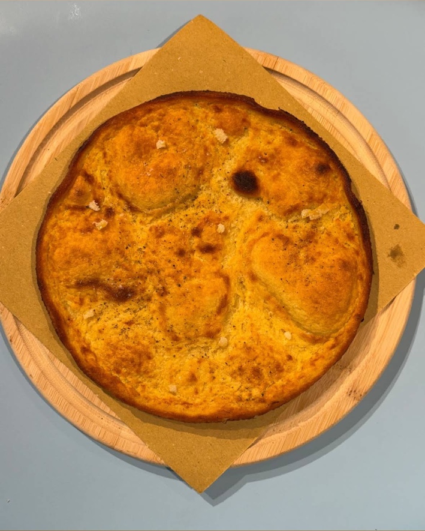
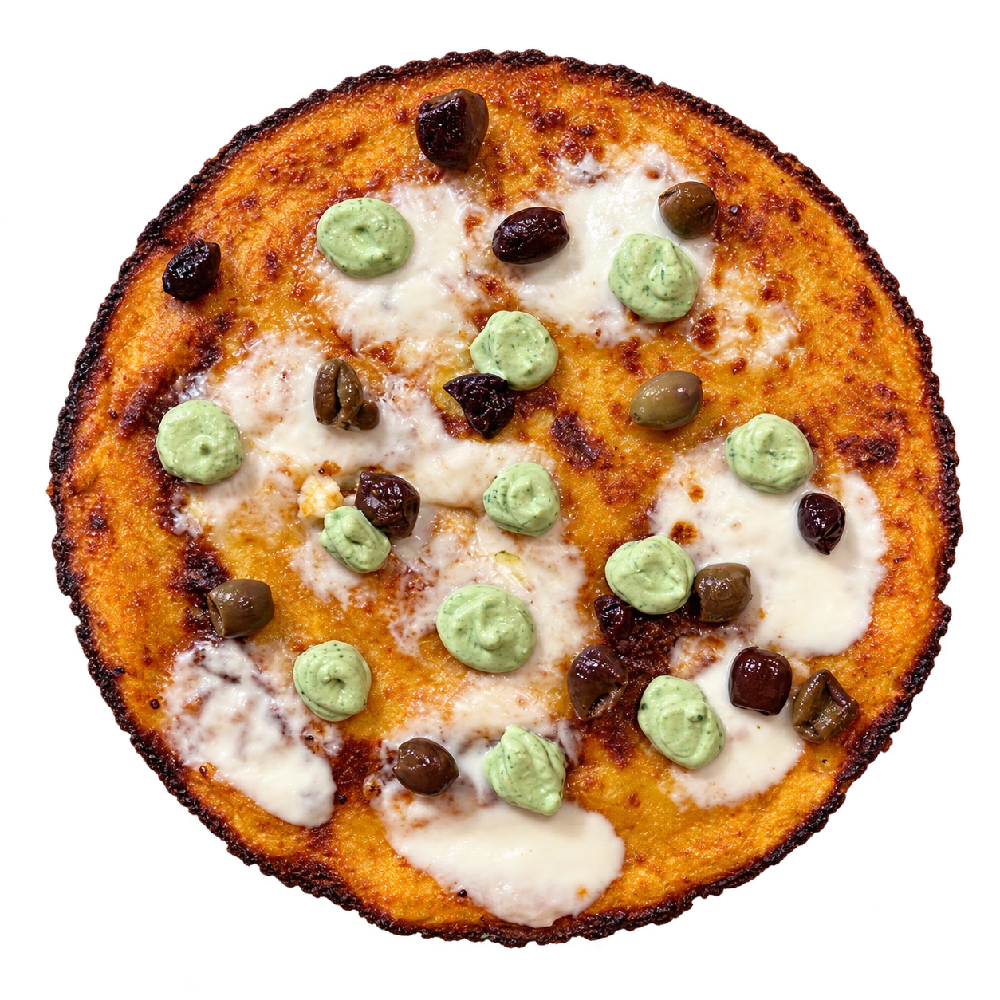
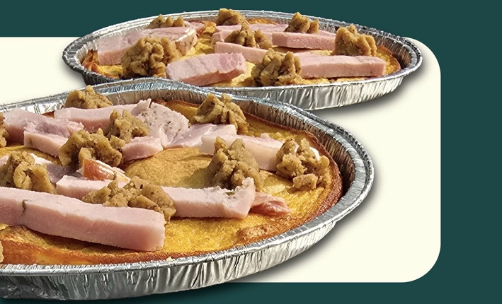

Le Più Amate
Classica
5,00 €Sale, pepe e scorza di limone.
Farinata ligure · Torino
Abbiamo portato un pezzo di Liguria in via Bogino. Sforniamo farinata dorata e la serviamo calda, dalla nostra Classica alle teglie farcite.
Via Bogino 5 · Torino centro
Scorri, si gira!
02 / Dalla nostra cucina

Dal nostro forno, dritta in teglia.
Per la base ci bastano quattro ingredienti.
Per farcire le nostre teglie scegliamo condimenti senza glutine. Anche i nostri muffin dolci, Ciock e Bosco da 3,50 €, li prepariamo con farina di ceci e ingredienti senza glutine.
Nel nostro forno cuociamo esclusivamente farinata e teniamo fuori gli impasti di frumento.
Se hai allergie o esigenze alimentari, parlane con noi prima di ordinare. Ti aiutiamo a controllare ingredienti e allergeni, bevande comprese.
03 / Delivery & asporto
Te la sforniamo in via Bogino 5. Gustala calda da noi, portala via oppure ordinala a domicilio su Glovo o Just Eat.
Nell’app trovi tempi, costi e disponibilità di consegna per il tuo indirizzo.
04 / Vieni a trovarci
Siamo nel cuore di Torino, a due passi da Via Po, Piazza Castello, Piazza Carlina e dalla Mole Antonelliana.
Passa a trovarci a pranzo o a cena in Via Bogino 5. Seguici su Instagram @belinchebon_torino per scoprire le farinate speciali fuori menu e gli orari sempre aggiornati.